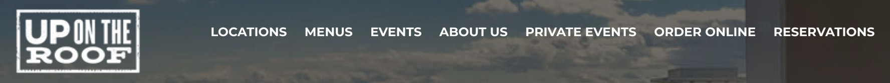
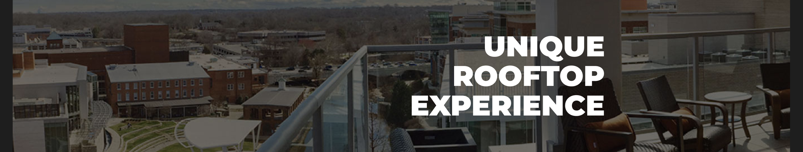
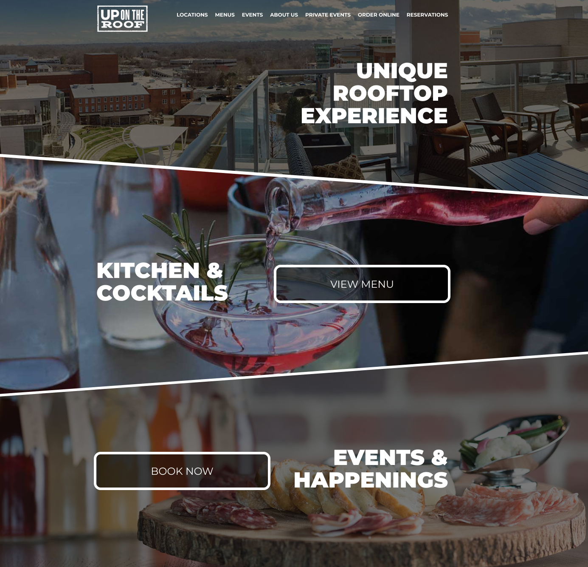

Fonts
There are a total of 6 different fonts being used just on the homepage. This is in addition to fonts used within images like the logo or other imagery. Experts advise sticking to 2 to 4 fonts for a website, and I tend to lean towards a maximum of two.
I went with a Google Font, Montserrat, which is clean and professional looking.
Using a clean and strong typeface for the navigation and headings will tie the design together without looking amateur or busy.

Contrast
In addition to reducing fonts to clean up the design, the contrast of the existing design needs to be addressed. In the "Kitchen + Cocktails" section, the text is hard to read against the light and textured background. Not only is this a design and usability concern, but contrast is also a primary accessibility concern when creating a website. You can learn more about web accessiblity here.
To create contrast over imagery, adding an overlay is often the best approach. A black overlay with white text or a white overlay with black text will make the image sink into the background and allow the text to easily read. Instead of small paragraphs of text, choosing a few bold headlines also makes the page scannable.
Page Sections
As a roof-top restaurant, there are no photos of a roof view on the homepage so choosing eye-catching imagery is the first priority. I pulled the roof-top images from another page on the website, and placed it at the top of the page as the first section.
To make the large page sections a little more interesting, I've utilized diagonal masks and borders. In any design, consistency is important, so the white section borders are very similar to those around the buttons. Both of those borders were taken from the original logo concept.
Summary
This is just the homepage, so my priority if this was a full website project would be to create style guidelines. Heading styles, page section styles, button styles, and callouts should be consistent across the website. Interior pages could utilize the same slanted hero image, but with a different image at the top of each page, for example.
I have no affiliation or contact with this website owner and just found it while browsing online. If you want to see the live site, you can find it here.